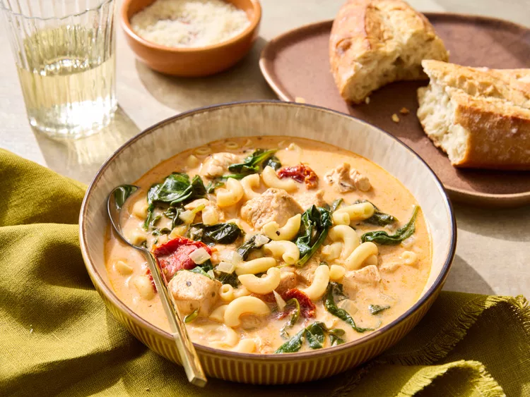

Tuscan Chicken Soup

Description
Tuscan soup, also known in Italy as minesta di pane (bread soup), is a soup from the region of Tuscany, northern Italy.
This recipe will show you an easy way to bring this piece of traditional Italian cousine into your home.
Ingredients
- 1 1/2 teaspoons olive oil
- 1/2 small onion, diced
- 2 garlic cloves, minced
- 1 tablespoon tomato paste
- 2 containers chicken bone broth
- 3/4 teaspoon Tuscan seasoning
- 1 skinless, boneless chicken breast, cut into pieces
- 1 handful roughly chopped spinach
- 2 tablespoons sun dried tomatoes
- 1/2 cup high protein pasta
- 2 tablespoons finely grated Parmesan cheese
- 1/4 cup heavy cream
Steps
- Gather the ingredients.
- Add oil to a saucepan over medium heat. Once oil is hot, add onion, and sauté until translucent, about 5 minutes. Add garlic; saute until fragrant; about 1 minute.
- Pour in chicken bone broth. Add Tuscan seasoning, chicken pieces, sun-dried tomatoes, and torn spinach. Stir to combine. Add in the pasta. Simmer until pasta is tender with a bite, about 10 minutes.
- Sprinkle in Parmesan; stir to combine. Stir in heavy cream. Serve immediately.
Home